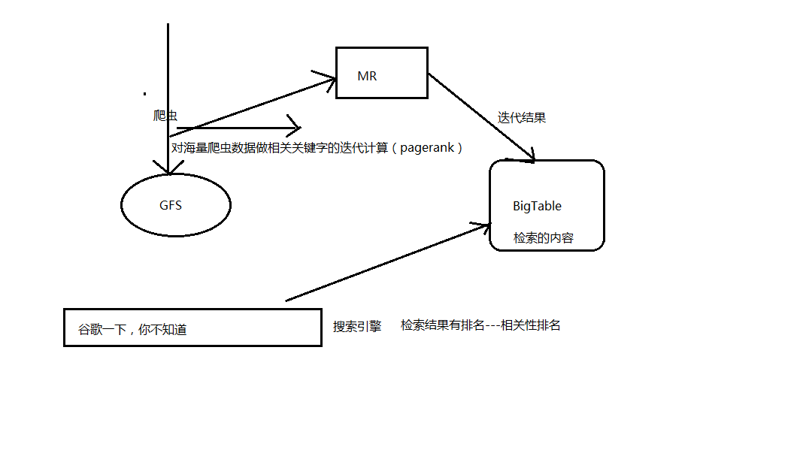
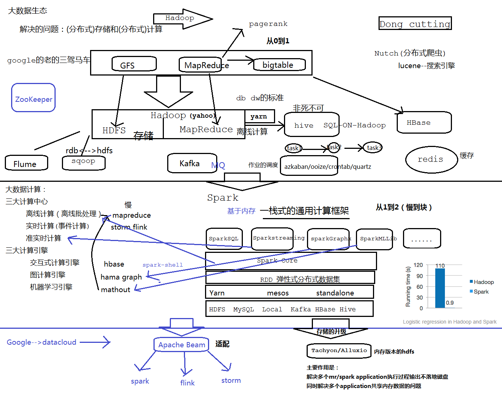

谷歌的老三驾马车架构:

大数据生态图:

===================================================================
Spark安装
第一步安装scala
解压：~]$ tar -zxvf soft/scala-2.11.8.tgz
重命名：~]$ mv scala-2.11.8 scala
配置到环境变量：
export SCALA_HOME=/home/bigdata/app/scala
export PATH=$PATH:$SCALA_HOME/bin
单机
解压重命名spark安装包到/home/bigdata/app
配置环境变量：
export SPARK_HOME=/home/bigdata/app/spark
export PATH=$PATH:$SPARK_HOME/bin:$SPARK_HOME/sbin
测试是否已经安装好？
简单的运行一个spark小程序
bin/spark-shell
scala> sc.textFile("/home/bigdata/app/data/hello").flatMap(_.split(" ")).map((_, 1)).reduceByKey(_+_).collect.foreach(println)
=========================================================================
完全分布式的配置
修改spark-env.sh
1、cd /home/bigdata/app/spark/conf
2、cp spark-env.sh.template spark-env.sh
3、vi spark-env.sh
export JAVA_HOME=/opt/jdk
export SCALA_HOME=/home/bigdata/app/scala
#主节点的master的ip地址或者hostname
export SPARK_MASTER_HOST=bigdata01
#7077的作业就相当于hdfs中9000,切忌不是50070--->8080
export SPARK_MASTER_PORT=7077
#从节点中每一个worker的cpu core的个数
export SPARK_WORKER_CORES=1
#在slaves配置中配置的每一台机器上面启动的worker的个数
export SPARK_WORKER_INSTANCES=1
#每一个worker的内存资源，配置不要超过当前机器的内存资源
#建议不要低于500m
export SPARK_WORKER_MEMORY=1g
export HADOOP_CONF_DIR=/home/bigdata/app/hadoop/etc/hadoop
修改slaves配置文件
添加两行记录
bigdata02
bigdata03
部署到bigdata02和bigdata03这两台机器上(这两台机器需要提前安装scala)
scp -r /home/bigdata/app/scala bigdata@bigdata02:/home/bigdata/app
scp -r /home/bigdata/app/scala bigdata@bigdata03:/home/bigdata/app
----
scp -r /home/bigdata/app/spark bigdata@bigdata02:/home/bigdata/app
scp -r /home/bigdata/app/spark bigdata@bigdata03:/home/bigdata/app
---在bigdata02和bigdata03上加载好环境变量,需要source生效
scp ~/.bash_profile bigdata@bigdata02:/home/bigdata
scp ~/.bash_profile bigdata@bigdata03:/home/bigdata
启动
修改事宜
为了避免和hadoop中的start/stop-all.sh脚本发生冲突，将spark/sbin/start/stop-all.sh重命名
sbin]# mv start-all.sh start-all-spark.sh
sbin]# mv stop-all.sh stop-all-spark.sh
启动
sbin/start-all-spark.sh
会在我们配置的主节点master上启动一个进程Master
会在我们配置的从节点bigdata02上启动一个进程Worker
会在我们配置的从节点bigdata03上启动一个进程Worker
简单的验证
启动spark-shell
bin/spark-shell
我们发现spark非常快速的执行了这个程序，计算出我们想要的结果
一个端口:8080/4040
8080-->spark集群的访问端口，类似于hadoop中的50070和8080的综合
4040-->sparkUI的访问地址
7077-->hadoop中的9000端口
=====================================================================
基于Zookeeper的HA的配置
最好在集群停止的时候来做
第一件事
注释掉spark-env.sh中两行内容
#export SPARK_MASTER_IP=bigdata01
#export SPARK_MASTER_PORT=7077
第二件事
在spark-env.sh中加一行内容
export SPARK_DAEMON_JAVA_OPTS="-Dspark.deploy.recoveryMode=ZOOKEEPER -Dspark.deploy.zookeeper.url=bigdata01:2181,bigdata02:2181,bigdata03:2181 -Dspark.deploy.zookeeper.dir=/spark"
解释
spark.deploy.recoveryMode设置成 ZOOKEEPER
spark.deploy.zookeeper.urlZooKeeper URL
spark.deploy.zookeeper.dir ZooKeeper 保存恢复状态的目录，缺省为 /spark
重启集群
在任何一台spark节点上启动start-spark-all.sh
手动在集群中其他从节点上再启动master进程：sbin/start-master.sh -->在bigdata02
通过浏览器方法 bigdata01:8080 /bigdata02:8080-->Status: STANDBY Status: ALIVE
验证HA，只需要手动停掉master上spark进程Master，等一会slave01上的进程Master状态会从STANDBY编程ALIVE
=====================================================================
名词解释：
ClusterManager：在Standalone模式中即为Master（主节点），控制整个集群，监控Worker。在YARN模式中为资源管理器。
Worker：从节点，负责控制计算节点，启动Executor。在YARN模式中为NodeManager，负责计算节点的控制。
Driver：运行Application的main()函数并创建SparkContext。
Executor：执行器，在worker node上执行任务的组件、用于启动线程池运行任务。每个Application拥有独立的一组Executors。
SparkContext：整个应用的上下文，控制应用的生命周期。
RDD：Spark的基本计算单元，一组RDD可形成执行的有向无环图RDD Graph。
DAG Scheduler：实现将Spark作业分解成一到多个Stage，每个Stage根据RDD的Partition个数决定Task的个数，然后生成相应的Task set放到TaskScheduler中。
TaskScheduler：将任务（Task）分发给Executor执行。
Stage：一个Spark作业一般包含一到多个Stage。
Task：一个Stage包含一到多个Task，通过多个Task实现并行运行的功能。
Transformations：转换(Transformations) (如：map, filter, groupBy, join等)，Transformations操作是Lazy的，也就是说从一个RDD转换生成另一个RDD的操作不是马上执行，Spark在遇到Transformations操作时只会记录需要这样的操作，并不会去执行，需要等到有Actions操作的时候才会真正启动计算过程进行计算。
Actions：操作(Actions) (如：count, collect, save等)，Actions操作会返回结果或把RDD数据写到存储系统中。Actions是触发Spark启动计算的动因。
SparkEnv：线程级别的上下文，存储运行时的重要组件的引用。
SparkEnv内创建并包含如下一些重要组件的引用。
MapOutPutTracker：负责Shuffle元信息的存储。
BroadcastManager：负责广播变量的控制与元信息的存储。
BlockManager：负责存储管理、创建和查找块。
MetricsSystem：监控运行时性能指标信息。
SparkConf：负责存储配置信息。
在spark集群中部署spark作业，加载hdfs文件的时候：
解决之道：
将$SPARK_HOME/conf/spark-default.conf.template cp成为$SPARK_HOME/conf/spark-default.conf
然后在该文件的最后一行添加一句话：
spark.files $HADOOP_HOME/etc/hadoop/hdfs-site.xml,$HADOOP_HOME/etc/hadoop/core-site.xml
spark-on-yarn
<property>
<name>yarn.nodemanager.pmem-check-enabled</name>
<value>false</value>
</property>
<property>
<name>yarn.nodemanager.vmem-check-enabled</name>
<value>false</value>
</property>